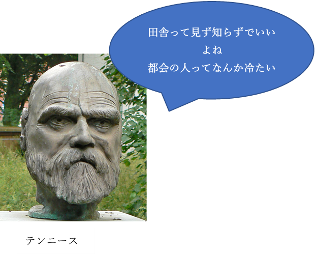

ゲマインシャフト・ゲゼルシャフト
都市と田舎
皆さんは今現在、どこに住んでいますか？都会で一人暮らしをしているでしょうか。それとも実家の近くで快適な生活をしているでしょうか。社会学ではよくゲマインシャフトとゲゼルシャフトという2つの概念として都市と田舎を考察します。
ゲマインシャフトvsゲゼルシャフト
ゲマインシャフト＝田舎は家族、近所付き合い、伝統に恵まれた共同体です。近代化以前は皆がこのゲマインシャフトで暮らしていました。
近代化以降、都市というものが発生します。都市つまりゲゼルシャフトには家族や伝統のようなものから解き放たれ、行動も自由です。皆さんはゲマインシャフトとゲゼルシャフト、田舎と都市どちらが好きですか？